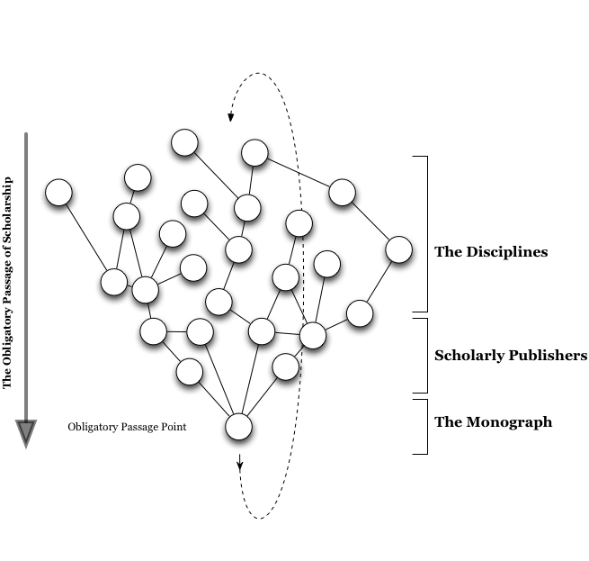
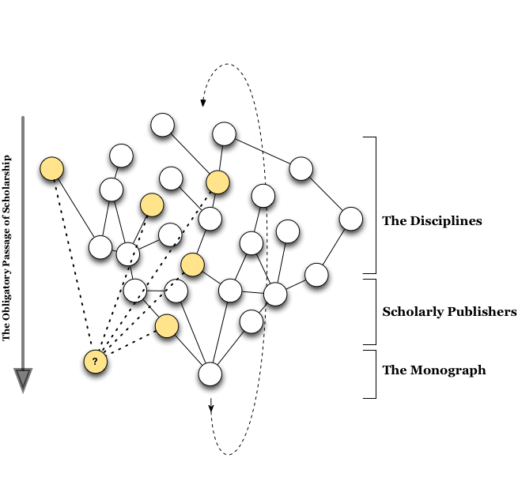

The purpose of this document is to identify the theoretical assumptions of trace ethnography and to identify a problem space where it could be effective.
Briefly, trace ethnography is a term and methodological technique introduced by Geiger & Ribes in their article “The Work of Sustaining Order in Wikipedia: The Banning of a Vandal.” In the article, Geiger & Ribes investigated the role of software tools in anti-vandalism activities on wikipedia. Their qualitative research unpacked an intricate network of human and non-human actors who work in concert to battle the onslaught of vandals who continually threaten the quality of wikipedia.
Their study found software agents, or “bots,” are more than simply force-multipliers, increasing the efficiency of anti-vandal activities. These software agents are constitutive elements of the socio-technical fabric of wikipedia enabling highly distributed and coordinated efforts to fight vandalism. While this is interesting, what is more important to the immediate discussion is the role trace ethnography played in helping them render visible this intricate socio-technical fabric. Through an ethnographic orientation to documentary “traces” the normally invisible work of “banning a vandal” was rendered analytically visible. “The method is best for revealing the often invisible infrastructures that underlie routinized activities, allowing researchers to generate highly-empirical accounts of network-level phenomena without having to be present at every node.” (1)
In the following I wish to “trace” the theoretical underpinnings of trace ethnography. Then I will begin to explore how these theoretical orientations might be brought to bare upon at the intersection of scholarly publishing and the digital humanities.
The practical purpose of trace ethnography is to “reconstruct the patterns and practices of users in distributed sociotechnical systems.” (1) In the paper that introduced the methodology, Geiger & Ribes reconstructed patterns of vandal and anti-vandal activity on Wikipedia through historical records automatically generated by the MediaWiki software. These logs, which record not only document changes, but usernames and IP addresses, maintain an extremely detailed history of all activity on Wikipedia. Through this user metadata Geiger & Ribes were able to reconstruct the situated and sequential activities which continually maintain Wikipedia.
Trace ethnography has two fundamental principles, first “documentary traces abound in today’s technological systems” and second, “documentary traces are the primary mechanism in which users themselves know their distributed communities and act within them.”
Takes advantage of the “informating” properties of digital technology. Informating was coined by Shoshana Zuboff in her book “In the Age of the Smart Machine” to describe non-rival features of digital information technology. “The devices that automate by translating information into action also register data about those automated activities, thus generating new streams of information.” (2) Not only does digital information technology allow the processing of information with unprecedented ease, it can also produce logs or metadata about that processing with equal ease. As Zuboff showed, the “informated” metadata, such as transaction, access, or activity logs, renders visible entirely new facets of an organization. This visibility has serious implications with regards to power and agency within organizational hierarchies. “The same systems that make it possible to automate office transactions also create a vast overview of an organization’s operations, with many levels of data coordinated and accessible for a variety of analytical efforts” (2)
In large scale distributed organizations, especially online communities such as Wikipedia, where traditional hierarchies do not regulate the flow of information, these traces are vital resources. Informated traces are the primary, and sometimes only, mechanism through which members are able to know and act within the distributed constituency.
In online communities, the historical traces of member’s activities are the only discursive (in)formation available. Members of highly distributed online communities assemble by and through the mediation of digital communicative infrastructure. In many cases the documentary traces are, in essence, “all they have to go on.” For example, as Geiger & Ribes discussed how wikipedia editors assembled and used edit histories in the course of a disciplinary hearing.
Trace ethnography follows the documentary residue of people’s online activity. These traces might include such things as “transaction logs, version histories, institutional records, conversation transcripts, and source code.” By re-assembling these traces a researcher can gain a much richer understanding of how networks of people assemble and operate online. “Once decoded, sets of such documentary traces can then be assembled into rich narratives of interaction, allowing researchers to carefully follow coordination practices, information flows, situated routines, and other social and organizational phenomena across a variety of scales.” (1)
It is also important to recognize many “virtual” communities assemble in both online and offline environments and as such we need methodologies to engage both discursive spaces. Hence, trace ethnography paired with traditional ethnography allows researchers to gain a richer understanding of the discursive formation in both environments.
In this section I will begin to unpack the theoretical underpinnings of trace ethnography. The purpose is to identify the theoretical scaffolding of trace ethnography—in my case the tensions and crisis at the intersection between the digital humanities and scholarly publishing. Thus, I investigate the theories deployed by Geiger & Ribes in their description of trace ethnography.
Geiger & Ribes take seriously the notion of turning people (‘ethno’) into writing (‘graphy’). Trace ethnography differs from discourse analysis or general archival research in their theoretical orientation. Like ethnography they focus upon “learning organizational structures and routines, roles and responsibilities, and other local customs and practices.” However, online spaces introduce theoretical and practical challenges. Traditional ethnography is “well-suited for a single group that resides in a shared location,” yet, many phenomena of interest are distributed across multiple locations.
Documentary approaches to ethnography, those that draw upon historical or archival records, have produce extremely rich understandings of complex, temporally distributed phenomena. Diane Vaughn’s work on the Challenger explosion recounted the sequences of events that led up to the launch decision through a systematic reconstruction of various documentary records. Her work produced vitally important understandings of the event and its investigations that could only come from a historical perspective. (3)
Beyond the temporal dimension, there has been extremely interesting work in ethnography of broad spatial dimensions. Rather than focusing on a single site and a single constituency, multi-sited ethnography seeks, in Latour’s words, to “follow the actors.” Julian Orr’s multi-sited ethnography of photocopier repair technicians was crucial in finding non-obvious locations, like breakfast diners, where important cultural work, like telling “war stories,” occurs. (4)
What I do not fully understand at this time is how documentary ethnography differs from discourse analysis and/or historiography. What is currently lacking is a reference to, or even the existence of, any sustained discussion about the theory of ethnographic method. To what degree do the various progeny of ethnography, documentary ethnography, multi-sited ethnography, virtual ethnography and trace ethnography, are “true” to their methodological ancestor? Furthermore, ethnography of digital spaces and places is desperately under-theorized. It has been over a decade since the publication of Christine Hine’s book “Virtual Ethnography.” (5) Perhaps will be alleviated by the forthcoming publication of “Ethnography and Virtual Worlds: A Handbook of Method” by Tom Boellstorff, Bonnie A. Nardi, Celia Pearce, and T.L. Taylor.
Once we begin thinking along the lines of multi-sited ethnography and “following the actors” it is only a small tweak in our ontological assumptions to consider the possibility that an “actor” might not be a human. Trace ethnography, in particular, takes this perceptual shift to heart. By following software tools and bots, as Julian Orr followed technicians, invisible spaces and places may open up to our analytical eye.
Geiger & Ribes cite Latour’s “circulating reference” to practically guide their reconstruction of actor’s activities. The circulating reference is the thread by which not only analysts, but also wikipedia editors and their tools, look to reconstruct and understand “what happened.” The use of traces by the actors themselves as part of their ongoing activities is an extremely important aspect of the trace ethnography method. By following the actors and their various configurations and enrollments we can find important and meaningful actor assembled traces. (6)
Actor assembled documentary traces reconstitute locally meaningful historical activities, such as a disciplinary hearings, as analysts we can and should pay attention to theses traces. As Geiger & Ribes put it “one reason why [pre-assembled] documentary traces are so useful is that they are produced and circulated in a specific sociotechnical environment, embedded with local meaning. While it is tempting to think of such data as ancillary, kept simply because computer systems log data, they are often used by members themselves to render accountable a number of social and organizational practices.” (1) How actors use these traces in the course of their ongoing work is one of the key interests of trace ethnography.
At a theoretical level, Geiger & Ribes draw inspiration from Actor Network Theory, specifically the concept of “delegation” as a “heuristic for symmetrically analyzing the way in which both humans and machines contribute to the production of social order.” The analytical move here is not to think about how non-human actors (bots) inhibit the agency of human actors (editors), but rather to treat both equally and observe how agency flows through their relations. (7), (8) What actions are easier or harder in the configuration of the sociotechnical architecture? When, and more importantly how, do certain actors “work-around” others? These questions naturally lead me to think about how the social and technical infrastructure enables and constrains activity within an actor network.
A “trace” is, by its vary nature, invisible from a perspective outside the actor network. Perspective is key. One person’s invisible trace is another person’s whole world. For example, the ever expanding volume of edit histories for a Wikipedia entry might be barely noticeable to the general reader (hidden behind a “history” tab), but to Wikipedia database administrators managing this volume of data is a full time job. The practice of infrastructural inversion is part of a conscious analytical effort to illuminate what otherwise might be invisible, yet never-the-less integral, elements of a socio-technical system. Infrastructural inversion purposefully seeks out the “boring and mundane” aspects of infrastructure, the standards, routines, and structures that have long sense drifted out of the purview of the infrastructure’s users. (9), (10)
Infrastructural inversion foregrounds “invisible work,” and workers by bringing them forward analytically to tease apart the recursively layered forces which shape and influence activity in and through infrastructures. (11) Furthermore, the inversion highlights how the structure and form of this invisible work might manifest as tensions in the face change change in the normalized and routinized functions of the system. For example, database schema that define “marriage” as a relationship between a “man” and a “woman” are technically unable to express the notion of “gay marriage,” not necessarily because of a particular ideological position, but because of technical rigidities in the design of relational database systems.
Trace ethnography is a method through which infrastructure may be “inverted” and normally invisible activities and influences may be analyzed.
The idea of distributed cognition was introduced by Ed Hutchins to help understand complex tasks, such as the collaborative work of keeping a U.S. Navy ship on course. Contrary to psychological perspective that posits cognition occurs exclusively inside the heads of individuals, Hutchins argued cognition is distributed within the environment and is thus “directly observable” to others enabling social activity. Complex and coordinated cognition is distributed in and through objects and inscriptions like navigational charts and physical markers on instruments. This distribution is the practical means by which people can collaborate in the execution of complex tasks. (12)
In the banning of a vandal, software tools and edit logs augment the activity of wikipedia editors. Like the navigation of a ship, the maintenance of wikipedia is an extremely complicated and informationally demanding activity requiring editors to collectively sort through massive amounts of information. Editor’s use of software tools are part of the routinized practices to determine when to revert an edit or ban an individual from making further edits. In conceptualizing these activities as distributed cognition, Gieger & Ribes argue for the importance of software tools and bots as an equally important element of any analysis of wikipedia.
Given the aforementioned discussion of the theoretical underpinnings of trace ethnography, I want to transition now into some preliminary notes about how I might use the method & concepts to explore the intersection of scholarly publishing and the digital humanities.
As I discussed above, trace ethnography draws from four main bodies of theory: ethnography(which we must remember is both theory and method), ANT, infrastructural inversion, and distributed cognition. Of these, I think actor network theory and infrastructural inversion are most applicable to investigating the relationship between the digital humanities and scholarly publishing.
Progressive scholars, administrators, and publishers, under the banner of digital humanities are actively trying to change the traditional system of scholarly publishing. If we think of agency as a property diffused through a network of human and non-human actors, perhaps we can begin to understand how existing network configurations resists technological change, especially in spite of the desires of some actors diffuse through the network.
Configurations of the actor network –what Callon called agencements–condition individual’s agency to act with a kind of friction through the network. In the diagram below, I imagine the relationships between the academic disciplines, scholarly publishers as one that reduces frictions such that the monograph emerges as an obligatory passage point for the production of scholarship.

The work of the “disciplines” is distilled through the scholarly publishers into the monograph, an obligatory passage point for the production of knowledge. This process is furthermore recursive, the published books feed back into the discipline’s production of knowledge. This is obviously an idealized and over-simplified model, but I think it illustrates the situation as many currently envision it today.
I see a, perhaps cursory, similarity between Callon’s agencements and Bowker & Star’s description of infrastructure. Each describes a social and technical structure that shapes and constrains activity, reducing friction for some paths and increasing friction for others, enabling the emergence of action and meanings. The structure of the humanities and the traditional system of scholarly publishing can be analyzed as an infrastructure/agencement, which nudges scholars down a path where the monograph seems obligatory.
If Agencement ~= (roughly equal to) Infrastructure then agencements can be practically observed through Infrastructural Inversion. That is, through a deep inspection of the standards, routines, and socio-technical structures of scholarly publishing we can shed light on the why the humanities suffers from the “tyranny of the monograph.” To simply ascribe this tyranny to the “culture” of the humanities leaves me dissastisfied. The “culture” must manifest in directly observable ways, for otherwise how does it exert its influence upon the humanities? Through the analytical practice of inversion a deeper understanding of the monograph’s persistence would hopefully be achieved.
I think Star’s adage, “infrastructure is invisible until it breaks” is appropriate, but perhaps even more appropriate would be “infrastructure is invisible until you try and break it.” This is how the numerous discussions, projects, and developments in the Digital Humanities meet the ingrained and embedded infrastructure of scholarly publishing. If infrastructural inversion looks at the recursive structural formations, embodied in standards, classifications, technical apparatus, habits & routines, then in the critiques of scholarly publishing by the digital humanities community being to approach a kind of “actor’s infrastructural inversion.”

Again I find myself quoting Star, “When is infrastructure?” As a result of their inversion, the digital humanities(the yellow tinted nodes) are in the midst of “infrastructuring,” they are building a new set of standards, classifications, technical structures, systems of evaluation, routines and disciplinary boundaries. How this new actor network settles is the open question.
Trace ethnography as a method is “more suited for revealing practices, routines, distributed cognition and coordination devices than meanings, affect, or ‘inside the mind’ cognition.” This has significant impacts upon the nature of research questions we can ask when using trace ethnography as the sole method of investigation. The real challenge in using this method is to move beyond thick descriptions and begin answering the “So what?” questions.
I think the epiphenomena of interest is not the practical ways in which the digital humanities and scholarly publishing resolve the tensions at their intersection. Rather I am more interested in how complex sociotechnical networks can reconfigure themselves, while at the same time maintaining their historicity. Digital humanities attempts to reconfigure the network of scholarly publishing is interesting in how they will do so in a way that does not sacrifice the important aspects of scholarly publishing (which may be implicitly articulated). How can digital humanities re-invent scholarly publishing and the dissemination of knowledge without throwing the baby out with the bathwater?
Bibliography
[1] Geiger, R.S., and D. Ribes. “Trace Ethnography: Following Coordination Through Documentary Practices.” In System Sciences (HICSS), 2011 44th Hawaii International Conference On, 1–10, 2011.
[2] Zuboff, Shoshana. In The Age Of The Smart Machine: The Future Of Work And Power. Basic Books, 1989.
[3] Vaughan, D., The Challenger Launch Decision. University Of Chicago Press, Chicago, 1997.
[4] Orr, J., Talking about machines : an ethnography of a modern job. ILR Press, Ithaca N.Y., 1996.
[5] Hine, Dr Christine M. Virtual Ethnography. 1st ed. Sage Publications Ltd, 2000.
[6] Latour, B. Circulating Reference: Sampling the Soil in the Amazon Forest. In Pandora’s Hope. Harvard University Press, Cambridge MA, 1999, 24.
[7] Latour, B. Mixing Humans and Nonhumans Together. Social Problems 35, 3 (1988), 298-310.
[8] Latour, B., Science in Action: How to Follow Scientists and Engineers Through Society. Harvard University Press, Cambridge, Mass., 1987.
[9] Bowker, G.C., Science on the run: information management and industrial geophysics at Schlumberger, 1920-1940. MIT Press, Cambridge, Mass., 1994.
[10] Bowker, G.C. and Star, S.L., Sorting Things Out: Classification and Its Consequences. MIT Press, Cambridge, Mass., 2000.
[11] Star, S.L., The Ethnography of Infrastructure. American Behavioral Scientist 43, 3 (1999), 377-391.
[12] Hutchins, E. Cognition in the Wild. The MIT Press, 1996.